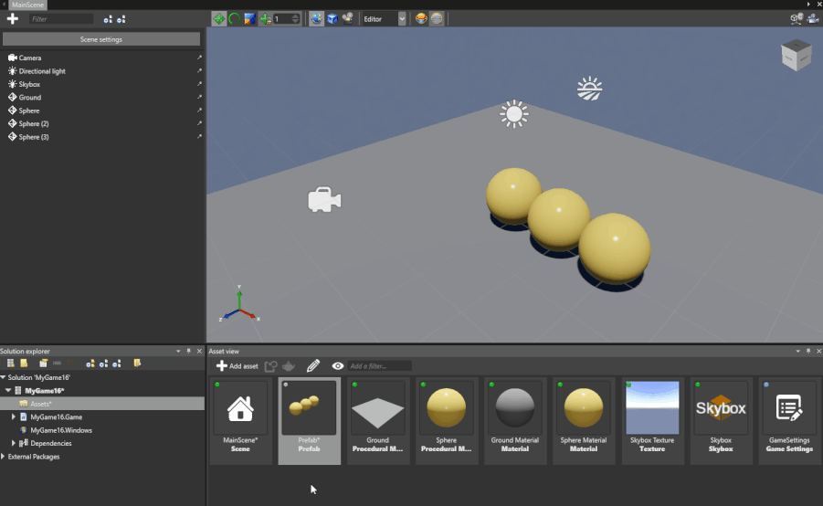
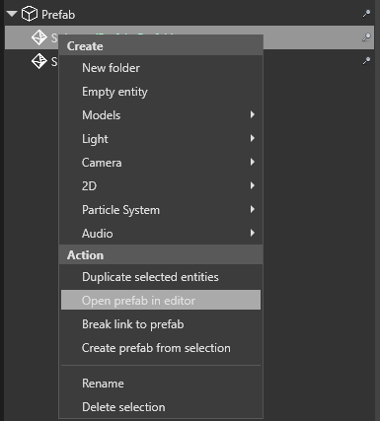
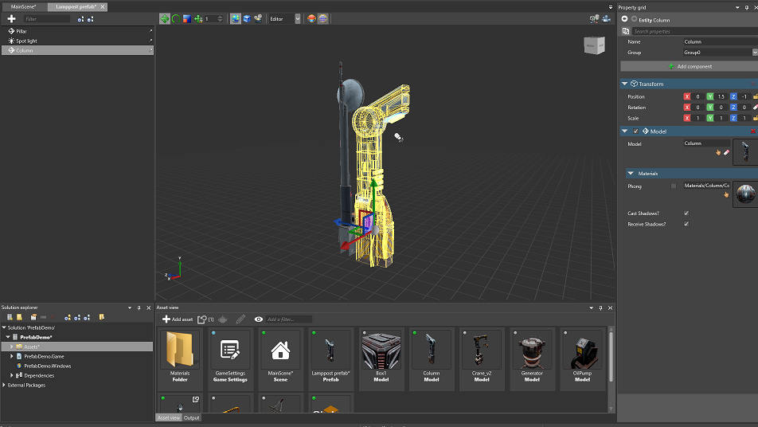

Edit prefabs
Warning
Приносим свои извинения за неудобства. Для этой страницы нет перевода на русский язык. Она будет отображаться на английском языке.
Beginner Designer
You can edit prefabs in the Prefab Editor.
Open the Prefab Editor
To open the Prefab Editor from the Asset View:
Right-click the prefab you want to edit and select Edit asset:

Alternatively, double-click the prefab you want to edit:

To open the Prefab Editor from the Scene Editor, right-click any child of a prefab instance and select Open prefab in editor.

Use the Prefab Editor

The Prefab Editor works similarly to the Scene Editor. For example, you can:
- add and delete entities
- use transformation gizmos to translate, rotate and scale entities
- create parent-child relations between entities
- add and modify entity components (scripts, materials, models, animations, etc)
For more information about managing entities, see Populate a scene.
When you edit a prefab in the Prefab Editor, the changes are applied to the instances of the prefab in the scene in real time.
This video demonstrates what happens when we make changes to the prefab. The Scene Editor is on the left, and the Prefab Editor on the right: